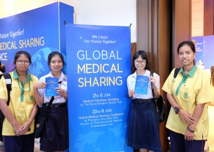
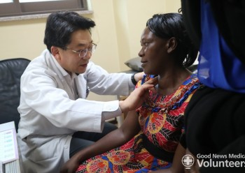

함께 만들어가는 행복한 세상
굿뉴스월드는 지구촌 소외된 이웃에게 희망을 전하는 국제개발협력NGO입니다.GNW이야기
-
전홍준 이사장, 대한민국 봉사대상 수…
한국유엔봉사단과 한국국제연합봉사단이 주최하고 서울특별시, 문화체육관광부 등이 후원하는 이 상은 국가와 지역사…
-
[태국] 랏차부리 의료봉사굿뉴스의료봉…
9월의 마지막 주말, 굿뉴스의료봉사회 태국지부는 랏차부리 의료봉사를 진행하였습니다! 굿뉴스월드 본부에서…
-
세계시민은 학교에서부터! 연서중학교 …
한글날(10월7일) 바로 전 날이었던 10월 8일! 은평구에 위치한 #연서중학교 에서 굿뉴스월드 #…
-
글로벌 나눔의료 컨퍼런스 in 태국 …
컨퍼런스에는 '나눔의료'라는 주제하에 각계각층의 관계자와 활동가, 자원봉사자들이 참석하였습니다…
-

글로벌 나눔의료 컨퍼런스 in 태국 …
2019년 6월 21, 22일 태국 방콕 시내 중심에서 "Happiness in Shiaring, …
-
월드브릿지와 함께하는 굿뉴스월드
자원봉사자들의 힙한 축제 세계문화페스티벌 월드브릿지와 굿뉴스월드가 함께한 이야기를 들어보시죠!
-

케냐 의료봉사를 통해 새 생명을 얻은…
지난해 8월, 케냐에서 의료봉사를 진행하던 중 목이 부은 상태로 살로메씨가 외과파트에 방문했습니다. 그녀의 …
-
 [한민족하나로KBS] 의료인이 전하는…
2008년 부터 매년 의료손길이 필요한 아프리카 사람들을 위해 여름휴가를 반납하는 사람들이 있습니다. 그 중…
[한민족하나로KBS] 의료인이 전하는…
2008년 부터 매년 의료손길이 필요한 아프리카 사람들을 위해 여름휴가를 반납하는 사람들이 있습니다. 그 중… -
건강하게 케냐로 돌아가신 앨리스씨!
지난 달, 저 먼 아프리카 케냐에서 두분의 손님이 찾아 오셨습니다. 행정안전부와 아산사회복지재단의 공모사업에…
-
아프리카, 동남아 지역 CLF 참가자…
지난 18일 굿뉴스의료봉사회는 한국에서 진행된 CLF (Christian Leaders Fellowship)…
-
굿뉴스월드 2020년도 상반기 ODA 영프…
- 2019-11-15
-
KCOC(국제개발협력민간협의회) 정회원 가…
- 2019-10-29
-
[모집] 베트남 구들 적정기술 프로젝트 나…
- 2019-10-28
-
[모집] 2019 태국 의료캠프 자원봉사자…
- 2019-09-23
-
2018년도 굿뉴스월드 세입·세출 결산보고
- 2019-05-30
-
굿뉴스월드 전홍준 이사장 '2019 대한민…
- 2019-11-08
-
[글로벌뉴스통신] 굿뉴스월드 전홍준 이사장…
- 2019-11-08
-
굿뉴스월드, 태국 의료 캠프 지원
- 2019-10-04
-
[내외일보] 굿뉴스월드, 태국 의료 캠프 …
- 2019-10-04
-
굿뉴스월드 의료봉사단, 코트디부아르서 제…
- 2019-08-21


굿뉴스의료봉사회
전세계 소외된 이웃들의 상처를 치유합니다.


희망캠페인 '만원의 기적'
도움이 절실한 지구촌 어린이들에게 희망을 전합니다.
투명경영
굿뉴스월드는 모든 후원금을 투명하게 사용합니다.